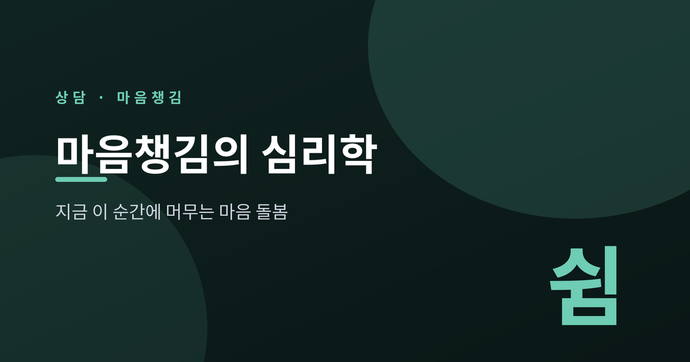
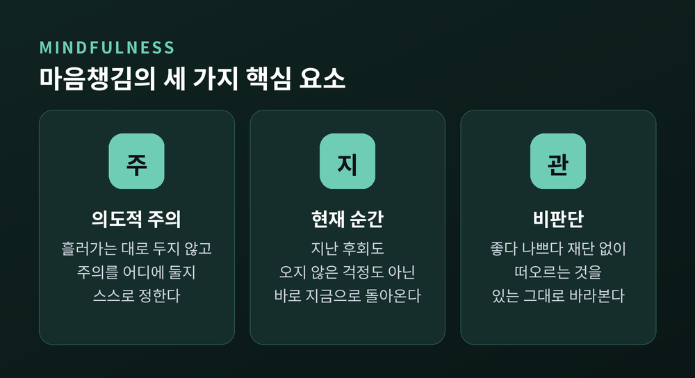
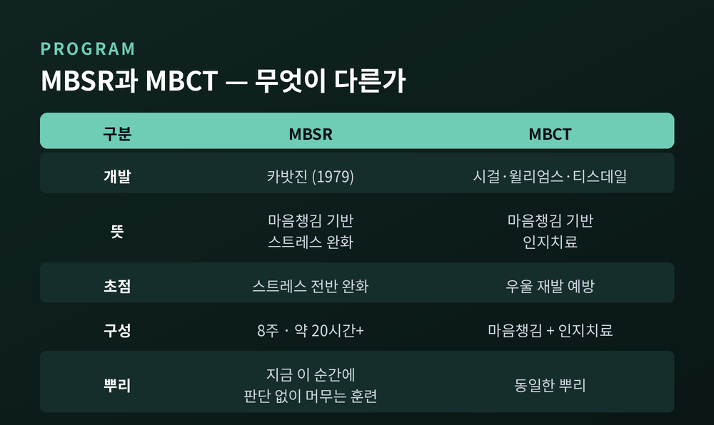
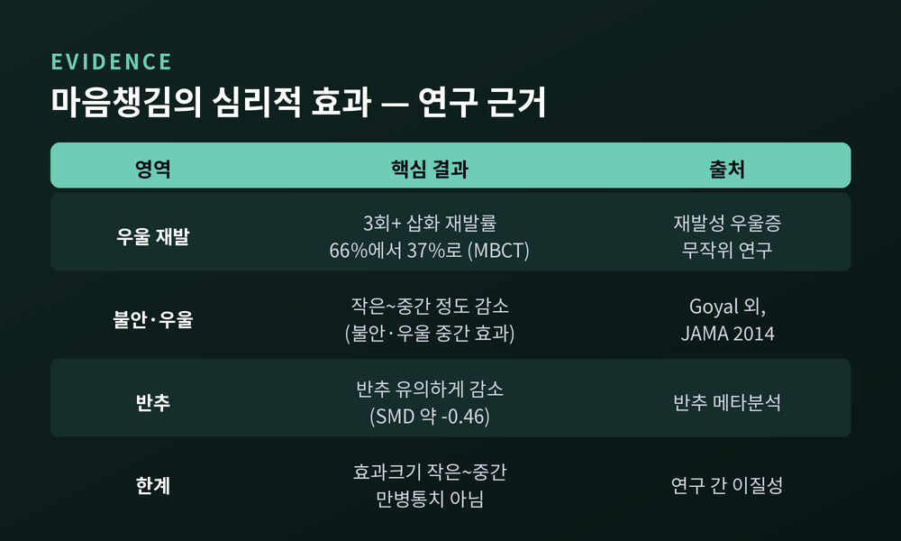
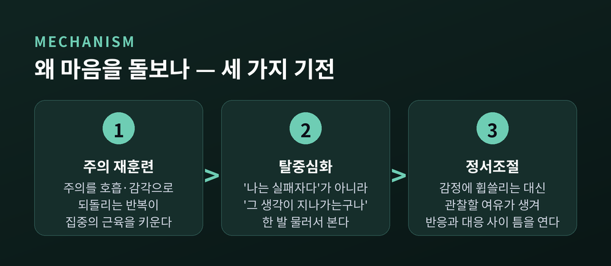
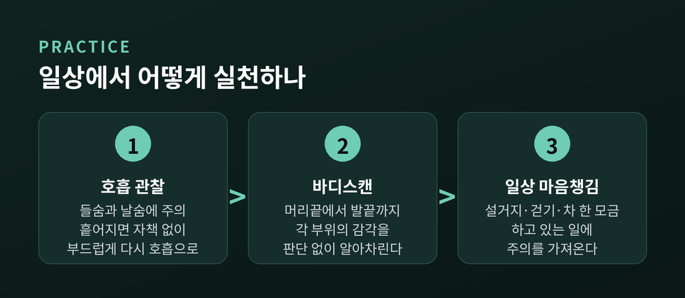

이번 글에서는 마음챙김(mindfulness)을 심리학의 눈으로 정리해 보겠습니다.
먼저 결론부터 말씀드립니다. 마음챙김은 신비한 재능이 아니라, 주의를 다루는 훈련입니다. 지금 이 순간에 판단 없이 머무는 연습이 반추와 불안, 스트레스를 다루는 힘을 길러 줍니다.
이 글은 일반적인 개념 소개일 뿐, 특정 개인에 대한 진단이나 처방이 아닙니다. 마음챙김이 무엇이고, 어떤 근거가 있으며, 왜 마음을 돌보는지, 그리고 일상에서 어떻게 실천하는지를 차례로 살펴보겠습니다.
마음챙김은 지금 이 순간에 일부러, 판단하지 않고 주의를 기울일 때 생기는 자각입니다.
이 정의는 존 카밧진(Jon Kabat-Zinn)의 것입니다. 그는 마음챙김을 "의도를 갖고, 현재 순간에, 비판단적으로 주의를 기울일 때 생기는 자각"이라 표현했습니다.
한 문장이지만 세 가지 훈련 요소가 들어 있습니다. 첫째는 의도적 주의입니다. 흘러가는 대로 두지 않고, 주의를 어디에 둘지 스스로 정합니다. 둘째는 현재 순간과의 접촉입니다. 지나간 후회나 오지 않은 걱정이 아니라, 바로 지금 벌어지는 감각으로 돌아옵니다. 셋째는 비판단입니다. 떠오르는 생각을 좋다 나쁘다로 즉시 재단하지 않고, 있는 그대로 바라봅니다.
여기서 가장 오해받는 말이 '비판단'입니다. 감정을 억누르거나 머리를 비우는 것이 아닙니다. 오히려 무엇이 일어나는지 또렷이 보되, 거기에 성급한 꼬리표를 달지 않는 태도에 가깝습니다.

원래 마음챙김은 불교 수행 전통 안에 있던 개념입니다. 카밧진은 이것을 윤리와 자비라는 넓은 틀에서 떼어 내, 임상과 일상에서 쓸 수 있는 절제된 형태로 옮겼습니다.
마음챙김이 심리학의 도구가 된 데에는 두 프로그램이 있습니다.
하나는 MBSR입니다. 마음챙김 기반 스트레스 완화(Mindfulness-Based Stress Reduction)의 약자입니다. 카밧진이 1979년 매사추세츠대학교 의과대학에서, 만성 질환과 통증에 시달리는 환자들의 스트레스를 줄이기 위해 만들었습니다. 표준 형태는 8주 과정이며, 보통 여덟 주에 걸쳐 스무 시간 남짓을 훈련에 씁니다.
다른 하나는 MBCT입니다. 마음챙김 기반 인지치료(Mindfulness-Based Cognitive Therapy)입니다. 시걸, 윌리엄스, 티스데일이 MBSR의 마음챙김 훈련에 인지치료 요소를 결합해 만들었습니다. 회복된 우울증 환자가 우울을 부르는 생각의 고리에서 한 발 빠져나오도록 돕는 것이 목표입니다.

두 프로그램은 결이 다릅니다. MBSR은 스트레스 전반을 다루고, MBCT는 우울의 재발을 막는 데 초점을 둡니다. 그러나 뿌리는 같습니다. '지금 이 순간에 판단 없이 머무는 훈련'이라는 뿌리입니다.
가장 자주 받는 질문일 것입니다. 근거를 담백하게 정리해 보겠습니다.
2014년 존스홉킨스 연구팀은 명상 프로그램 연구들을 종합해 JAMA 내과 학술지에 발표했습니다. 결론은 이랬습니다. 명상 프로그램은 다양한 성인 집단에서 심리적 스트레스를 작은 정도에서 중간 정도로 줄인다. 불안과 우울에는 중간 정도의 효과가 확인되었습니다.
가장 인상적인 근거는 우울증 재발 예방입니다. 회복된 재발성 우울증 환자들을 대상으로 한 연구에서, 과거 우울 삽화가 세 번 이상이었던 사람들의 재발률이 통상 치료만 받은 경우 66퍼센트, 여기에 MBCT를 더한 경우 37퍼센트로 나타났습니다. 절반 가까이 낮아진 셈입니다.
반추에 대한 효과도 보고됩니다. 우울 장애 환자에게 마음챙김 개입은 반추를 유의하게 낮추었습니다. 반추란 부정적 생각을 반복해서 되새기는 습관으로, 우울과 불안을 오래 붙잡아 두는 고리입니다.

다만 과장은 삼가야 합니다. 효과크기는 대체로 작은에서 중간 수준이며, 마음챙김은 만병통치가 아닙니다. MBCT의 재발 예방 효과도 삽화가 세 번 이상인 경우에 뚜렷했고, 두 번뿐인 경우에는 확인되지 않았습니다. 근거는 분명하되, 조건이 있다는 점을 함께 기억하는 편이 정직합니다.
효과가 있다면, 그 안에서 무슨 일이 벌어지는 걸까요. 심리학은 세 가지 기전을 이야기합니다.
첫째는 탈중심화(decentering)입니다. 가장 핵심이 되는 변화입니다. 탈중심화란 자기 생각과 감정에 대한 집착이 줄어드는 관점의 전환을 말합니다. 예전에는 '나는 실패자다'라는 생각을 사실로 붙잡았습니다. 지금은 '실패자라는 생각이 지나가는구나'라고 한 발 물러서서 바라봅니다. 생각을 나 자신과 동일시하지 않고, 지나가는 정신적 사건으로 보는 것입니다.
둘째는 정서조절입니다. 마음챙김은 주의와 신체 자각, 감정을 다루는 뇌 기능의 변화를 통해 작동합니다. 감정에 곧바로 휩쓸리는 대신, 감정을 관찰할 여유가 생깁니다. 그 여유가 반응과 대응 사이에 틈을 만듭니다.
셋째는 주의 재훈련입니다. 주의를 호흡이나 신체 감각으로 되돌리는 연습을 반복하면, 방해 속에서도 주의를 붙들고 옮기는 힘이 자랍니다. 마음이 걱정의 증식으로 달려갈 때, 다시 지금으로 데려오는 근육이 붙는 셈입니다.

세 기전은 따로 놀지 않습니다. 주의를 되돌리는 힘이 생각에서 물러설 여유를 만들고, 그 여유가 감정을 다스릴 틈을 엽니다.
거창한 준비물은 필요 없습니다. 짧게, 자주가 핵심입니다.
가장 기본은 호흡 관찰입니다. 들숨과 날숨에 주의를 둡니다. 마음이 흩어지면 자책하지 말고, 부드럽게 다시 호흡으로 돌아옵니다. 흩어지고 돌아오는 그 반복 자체가 훈련입니다.
다음은 바디스캔입니다. 머리끝에서 발끝까지 주의를 옮기며, 각 부위의 감각을 호기심을 갖고 판단 없이 살핍니다. 긴장인지 이완인지, 무거운지 가벼운지를 그저 알아차립니다. 잠들기 전 짧게 해 보시면 좋겠습니다.
마지막은 일상 마음챙김입니다. 이미 하고 있는 일에 주의를 가져오는 것입니다. 설거지하는 물의 온도, 걷는 발바닥의 감각, 한 모금의 차. 방석도 조용한 방도 필요 없이, 평범한 하루 한복판에서 이뤄집니다.

초보자에게 권하고 싶은 것은 길이가 아니라 꾸준함입니다. 하루 3분에서 10분이면 충분합니다. 오래 한 번보다, 짧게 여러 번이 낫습니다. 마음챙김은 결심이 아니라 반복으로 자라기 때문입니다.
끝으로 한 가지만 덧붙이겠습니다.
마음챙김은 전문적인 치료를 대신하지 않습니다. 우울이나 불안, 스트레스가 오래 이어지거나 일상을 흔든다면, 혼자 견디지 마시고 전문 상담사나 정신건강 전문가의 도움을 받으시길 권합니다. 이 글은 스스로를 돌보는 하나의 출발점일 뿐입니다.
지금 이 순간으로 돌아오는 일은 대단한 결심을 요구하지 않습니다.
"돌아올 수 있다는 것, 그것만으로 마음은 이미 돌봄을 받습니다."
숨 한 번 고르고 지금 이 문장을 읽고 있는 자신을 알아차리는 것 — 그것이 이미 마음챙김의 첫걸음입니다.